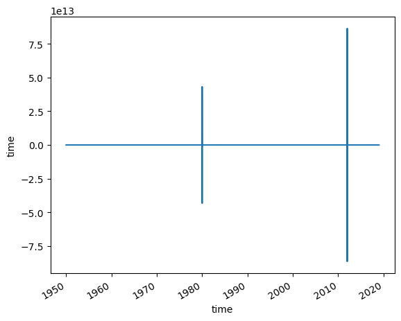

# Our GPU has tensor cores, hence mixed precision training is enabled
# see https://sebastianraschka.com/blog/2023/llm-mixed-precision-copy.html
# for more
torch.set_float32_matmul_precision("medium")BaltNet
BaltNet (modelPar)
Base class for all neural network modules.
Your models should also subclass this class.
Modules can also contain other Modules, allowing to nest them in a tree structure. You can assign the submodules as regular attributes::
import torch.nn as nn
import torch.nn.functional as F
class Model(nn.Module):
def __init__(self):
super().__init__()
self.conv1 = nn.Conv2d(1, 20, 5)
self.conv2 = nn.Conv2d(20, 20, 5)
def forward(self, x):
x = F.relu(self.conv1(x))
return F.relu(self.conv2(x))Submodules assigned in this way will be registered, and will have their parameters converted too when you call :meth:to, etc.
.. note:: As per the example above, an __init__() call to the parent class must be made before assignment on the child.
:ivar training: Boolean represents whether this module is in training or evaluation mode. :vartype training: bool
BaseLineModel
BaseLineModel (modelPar)
Base class for all neural network modules.
Your models should also subclass this class.
Modules can also contain other Modules, allowing to nest them in a tree structure. You can assign the submodules as regular attributes::
import torch.nn as nn
import torch.nn.functional as F
class Model(nn.Module):
def __init__(self):
super().__init__()
self.conv1 = nn.Conv2d(1, 20, 5)
self.conv2 = nn.Conv2d(20, 20, 5)
def forward(self, x):
x = F.relu(self.conv1(x))
return F.relu(self.conv2(x))Submodules assigned in this way will be registered, and will have their parameters converted too when you call :meth:to, etc.
.. note:: As per the example above, an __init__() call to the parent class must be made before assignment on the child.
:ivar training: Boolean represents whether this module is in training or evaluation mode. :vartype training: bool
LightningModel
LightningModel (model, learning_rate, cosine_t_max)
Hooks to be used in LightningModule.
AtmosphericDataset
AtmosphericDataset (datapath, transform=None)
An abstract class representing a :class:Dataset.
All datasets that represent a map from keys to data samples should subclass it. All subclasses should overwrite :meth:__getitem__, supporting fetching a data sample for a given key. Subclasses could also optionally overwrite :meth:__len__, which is expected to return the size of the dataset by many :class:~torch.utils.data.Sampler implementations and the default options of :class:~torch.utils.data.DataLoader.
.. note:: :class:~torch.utils.data.DataLoader by default constructs a index sampler that yields integral indices. To make it work with a map-style dataset with non-integral indices/keys, a custom sampler must be provided.
AtmosphereDataModule
AtmosphereDataModule (datapath, batch_size=64, num_workers=8, add_first_dim=True)
A DataModule standardizes the training, val, test splits, data preparation and transforms. The main advantage is consistent data splits, data preparation and transforms across models.
Example::
class MyDataModule(LightningDataModule):
def __init__(self):
super().__init__()
def prepare_data(self):
# download, split, etc...
# only called on 1 GPU/TPU in distributed
def setup(self, stage):
# make assignments here (val/train/test split)
# called on every process in DDP
def train_dataloader(self):
train_split = Dataset(...)
return DataLoader(train_split)
def val_dataloader(self):
val_split = Dataset(...)
return DataLoader(val_split)
def test_dataloader(self):
test_split = Dataset(...)
return DataLoader(test_split)
def teardown(self):
# clean up after fit or test
# called on every process in DDPL.pytorch.seed_everything(123)Global seed set to 123123Quickly inspect if \(\Delta t\) in the data changes. If not simply resampling should do it.
datapath = "/silor/boergel/paper/runoff_prediction/data"
labels = xr.open_mfdataset(f"{datapath}/runoffData/combined_fastriver_00*.nc", combine="nested", concat_dim="river")
labels.time.diff("time").diff("time").plot()
# runoff = read_netcdfs(
# f"{datapath}/runoffData/combined_fastriver_*.nc",
# dim="river",
# transform_func = lambda ds:ds.roflux.resample(time="1D").mean(),
# cftime=False# runoff = runoff.transpose("time", "river")dataLoader = AtmosphereDataModule(
datapath="/silor/boergel/paper/runoff_prediction/data",
batch_size=64
)modelParameters = {
"input_dim":30, # timesteps
"hidden_dim":1, # Channels -> right now only precipitation
"kernel_size":(3,3), # applied for spatial convolutions
"num_layers":2, # number of convLSTM layers
"batch_first":True, # first index is batch
"bias":True,
"return_all_layers": False,
"dimensions": (191, 206) # dimensions of atmospheric forcing
}
num_epochs = 50pyTorchBaltNet = BaltNet(modelPar=modelParameters)
LighningBaltNet = LightningModel(pyTorchBaltNet, learning_rate=1e-3, cosine_t_max=num_epochs)callbacks = [
ModelCheckpoint(save_top_k=1, mode="max", monitor="val_mse", save_last=True)
]trainer = L.Trainer(
max_epochs=num_epochs,
accelerator="cuda",
devices=2,
logger=CSVLogger(save_dir="/silor/boergel/paper/runoff_prediction/logs", name="BaltNet1"),
deterministic=True,
)GPU available: True (cuda), used: True
TPU available: False, using: 0 TPU cores
IPU available: False, using: 0 IPUs
HPU available: False, using: 0 HPUstrainer.fit(model=LighningBaltNet, datamodule=dataLoader)[rank: 0] Global seed set to 123
[rank: 1] Global seed set to 123
Initializing distributed: GLOBAL_RANK: 0, MEMBER: 1/2
Initializing distributed: GLOBAL_RANK: 1, MEMBER: 2/2
----------------------------------------------------------------------------------------------------
distributed_backend=nccl
All distributed processes registered. Starting with 2 processes
----------------------------------------------------------------------------------------------------
100%|██████████| 54/54 [01:14<00:00, 1.37s/it]
100%|██████████| 54/54 [02:02<00:00, 2.26s/it]
100%|██████████| 97/97 [08:00<00:00, 4.96s/it]
100%|██████████| 97/97 [08:08<00:00, 5.03s/it]
LOCAL_RANK: 1 - CUDA_VISIBLE_DEVICES: [0,1]
LOCAL_RANK: 0 - CUDA_VISIBLE_DEVICES: [0,1]
| Name | Type | Params
-----------------------------------------------
0 | model | BaltNet | 20.3 M
1 | train_mse | MeanSquaredError | 0
2 | val_mse | MeanSquaredError | 0
3 | test_mse | MeanSquaredError | 0
-----------------------------------------------
20.3 M Trainable params
0 Non-trainable params
20.3 M Total params
81.217 Total estimated model params size (MB)Epoch 49: 100%|██████████| 123/123 [00:20<00:00, 5.94it/s, v_num=46, train_mse_step=0.00623, train_loss_step=0.00623, val_mse=0.0138, train_mse_epoch=0.00652, train_loss_epoch=0.00652]`Trainer.fit` stopped: `max_epochs=50` reached.Epoch 49: 100%|██████████| 123/123 [00:21<00:00, 5.72it/s, v_num=46, train_mse_step=0.00623, train_loss_step=0.00623, val_mse=0.0138, train_mse_epoch=0.00652, train_loss_epoch=0.00652]trainer.test(model=LighningBaltNet, datamodule=dataLoader)[rank: 1] Global seed set to 123
[rank: 0] Global seed set to 123
Initializing distributed: GLOBAL_RANK: 1, MEMBER: 2/2
Initializing distributed: GLOBAL_RANK: 0, MEMBER: 1/2----------------------------------------------------------------------------------------------------
distributed_backend=nccl
All distributed processes registered. Starting with 2 processes
----------------------------------------------------------------------------------------------------
100%|██████████| 54/54 [01:05<00:00, 1.22s/it]
100%|██████████| 54/54 [02:01<00:00, 2.60s/it]
100%|██████████| 97/97 [08:05<00:00, 5.01s/it]
100%|██████████| 97/97 [08:10<00:00, 5.06s/it]
LOCAL_RANK: 1 - CUDA_VISIBLE_DEVICES: [0,1]
LOCAL_RANK: 0 - CUDA_VISIBLE_DEVICES: [0,1]
/silos/conda_packages/boergel/miniconda3_4.12.0/OS_15.4/conda_env/BaltNet/lib/python3.11/site-packages/lightning/pytorch/trainer/connectors/data_connector.py:226: PossibleUserWarning: Using `DistributedSampler` with the dataloaders. During `trainer.test()`, it is recommended to use `Trainer(devices=1, num_nodes=1)` to ensure each sample/batch gets evaluated exactly once. Otherwise, multi-device settings use `DistributedSampler` that replicates some samples to make sure all devices have same batch size in case of uneven inputs.
rank_zero_warn(Testing DataLoader 0: 100%|██████████| 15/15 [00:03<00:00, 4.00it/s]/silos/conda_packages/boergel/miniconda3_4.12.0/OS_15.4/conda_env/BaltNet/lib/python3.11/site-packages/lightning/pytorch/trainer/connectors/logger_connector/result.py:432: PossibleUserWarning: It is recommended to use `self.log('test_loss', ..., sync_dist=True)` when logging on epoch level in distributed setting to accumulate the metric across devices.
warning_cache.warn(Testing DataLoader 0: 100%|██████████| 15/15 [00:03<00:00, 3.99it/s]┏━━━━━━━━━━━━━━━━━━━━━━━━━━━┳━━━━━━━━━━━━━━━━━━━━━━━━━━━┓ ┃ Runningstage.testing ┃ ┃ ┃ metric ┃ DataLoader 0 ┃ ┡━━━━━━━━━━━━━━━━━━━━━━━━━━━╇━━━━━━━━━━━━━━━━━━━━━━━━━━━┩ │ test_loss │ 0.013884569518268108 │ │ test_mse │ 0.014290162362158298 │ └───────────────────────────┴───────────────────────────┘
[{'test_loss': 0.013884569518268108, 'test_mse': 0.014290162362158298}]